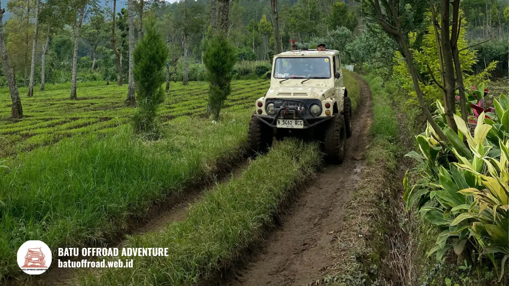

Perawatan dan Pengecekan Jeep Sebelum Offroad Dimulai
Sebelum jeep offroad berangkat di Batu, operator umumnya memeriksa rem, ban, mesin, sistem kemudi, suspensi, lampu, serta tempat duduk dan pegangan penumpang. Pengecekan jeep offroad ini penting karena jalur tanah dan tanjakan memberi beban besar pada kendaraan.
Poin Penting Pengecekan Jeep
- Pengecekan jeep offroad mengurangi risiko kendala kendaraan di jalur tanah dan tanjakan.
- Bagian utama yang diperiksa meliputi rem, ban, mesin, kemudi, suspensi, dan tempat duduk.
- Driver dan mekanik berbagi peran dalam memastikan kendaraan layak jalan.
- Wisatawan boleh menanyakan prosedur pengecekan kepada operator.
- Pengecekan tidak menghilangkan risiko sepenuhnya, jadi arahan keselamatan tetap harus dipatuhi.
Kenapa Pengecekan Jeep Offroad Itu Penting?
Pengecekan jeep offroad penting karena kendaraan bekerja di jalur tanah, tanjakan, dan permukaan licin yang menuntut kondisi rem, ban, dan mesin tetap prima.
Medan offroad membebani kendaraan lebih berat daripada jalan aspal. Guncangan, tanjakan, dan lumpur mempercepat keausan. Tanpa pengecekan rutin, masalah kecil dapat berkembang menjadi gangguan saat jeep membawa penumpang.
Tingkat kunjungan Kota Batu menambah pentingnya perawatan. Pemkot Batu mencatat 564.622 wisatawan saat libur Lebaran 2024 dan 778.235 pada 2025 (ANTARA, April 2025).
Pada periode ramai, jeep dapat beroperasi lebih sering dalam sehari. Frekuensi pemakaian yang tinggi membuat pengecekan sebelum berangkat menjadi semakin relevan.
Manfaat utama pengecekan:
- Menurunkan risiko kendaraan mogok di jalur.
- Memastikan rem dan kemudi responsif.
- Menjaga kenyamanan penumpang.
- Membantu operator mengenali kerusakan lebih awal.
Bagian Apa Saja yang Diperiksa pada Jeep Offroad?
Bagian yang diperiksa pada jeep offroad umumnya meliputi rem, ban, mesin, oli, sistem kemudi, suspensi, lampu, serta tempat duduk dan pegangan penumpang.
Rincian pengecekan yang lazim dilakukan:
- Rem. Respons pedal dan kondisi kampas rem diperiksa agar kendaraan dapat berhenti dengan baik di turunan.
- Ban. Tekanan, tapak, dan kondisi dinding ban diperiksa karena ban menopang traksi di jalur tanah.
- Mesin dan oli. Level oli, air pendingin, dan suara mesin dicek agar kendaraan tidak mudah panas.
- Kemudi dan suspensi. Kekencangan komponen dan kondisi peredam diperiksa agar kendaraan stabil.
- Lampu dan klakson. Fungsi lampu dan klakson dicek untuk visibilitas dan komunikasi.
- Tempat duduk dan pegangan. Kekokohan dudukan dan pegangan penumpang diperiksa karena menentukan rasa aman.
- Sabuk pengaman. Bila tersedia, fungsinya dicek sebelum penumpang naik.
Daftar ini merupakan gambaran umum. Prosedur tiap operator dapat berbeda sesuai jenis jeep dan kebijakan internal. Karena itu, wisatawan boleh bertanya bagian mana saja yang diperiksa sebelum berangkat.
Selain pengecekan harian, perawatan berkala juga dibutuhkan. Perawatan jeep wisata meliputi penggantian oli, pemeriksaan suspensi, dan perbaikan komponen yang aus sesuai jadwal. Operator yang rutin merawat armada cenderung lebih siap menghadapi medan berat.

Jeep offroad krem melintasi jalur tanah berlumpur di kawasan pegunungan Kota Batu yang menuntut pengecekan berkala.
Bagaimana Peran Driver dan Mekanik?
Driver bertugas memeriksa kondisi jeep dan melaporkan keluhan sebelum berangkat, sedangkan mekanik memperbaiki serta merawat komponen secara berkala.
Pembagian peran ini membuat pengecekan lebih menyeluruh. Driver yang setiap hari mengemudikan jeep biasanya peka terhadap perubahan suara, getaran, atau respons kendaraan. Mekanik memiliki keahlian teknis untuk memperbaiki masalah yang ditemukan.
Peran umum masing-masing:
- Driver: pengecekan harian, pelaporan keluhan, dan pengambilan keputusan di lapangan, termasuk menghentikan perjalanan bila kondisi tidak aman.
- Mekanik: perawatan berkala, penggantian komponen, dan perbaikan.
- Operator: menyusun prosedur dan memastikan kendaraan tidak beroperasi bila belum layak.
Operator yang baik mendorong driver melapor tanpa takut. Budaya keselamatan seperti ini menurunkan risiko, meski tidak dapat menghilangkannya sepenuhnya.
Apa yang Bisa Ditanyakan Tamu tentang Pengecekan Jeep?
Tamu boleh menanyakan prosedur pengecekan, kondisi rem dan ban, ketersediaan pegangan, serta kebijakan operator bila kendaraan mengalami kendala di jalur.
Wisatawan berhak merasa nyaman dengan kendaraan yang dinaiki. Pertanyaan yang wajar diajukan antara lain:
- Apakah jeep diperiksa sebelum beroperasi setiap hari?
- Bagian apa saja yang dicek?
- Apakah ada sabuk pengaman atau pegangan untuk penumpang?
- Apa prosedur jika jeep mengalami kendala?
- Apakah ada kendaraan cadangan?
Jawaban yang jelas dan terbuka menandakan operator yang profesional. Hindari operator yang menolak menjawab pertanyaan dasar tentang keselamatan.
Tamu juga bisa melakukan pengamatan sederhana, seperti memperhatikan kebersihan, kondisi tempat duduk, dan kesan umum perawatan kendaraan.
Informasi dalam artikel ini bersifat umum dan tidak menggantikan prosedur resmi operator. Untuk gambaran lengkap tentang armada dan pemandu, baca panduan utama jeep offroad batu.
Kesimpulan
Pengecekan jeep offroad sebelum berangkat mencakup rem, ban, mesin, kemudi, suspensi, dan fasilitas penumpang. Driver, mekanik, dan operator berbagi tanggung jawab agar kendaraan layak jalan di jalur tanah Kota Batu.
FAQ
-
Apa saja yang dicek sebelum berangkat?
Sebelum berangkat, operator umumnya memeriksa rem, ban, mesin, oli, kemudi, suspensi, lampu, serta tempat duduk dan pegangan penumpang. Rincian dapat berbeda antaroperator. -
Siapa yang bertanggung jawab memeriksa jeep offroad?
Driver biasanya melakukan pengecekan harian, mekanik melakukan perawatan dan perbaikan berkala, dan operator bertanggung jawab memastikan kendaraan layak sebelum membawa penumpang. -
Bolehkah wisatawan menanyakan kondisi jeep?
Boleh. Wisatawan wajar menanyakan prosedur pengecekan, kondisi rem dan ban, serta sabuk pengaman atau pegangan. Operator yang profesional umumnya bersedia menjelaskan.